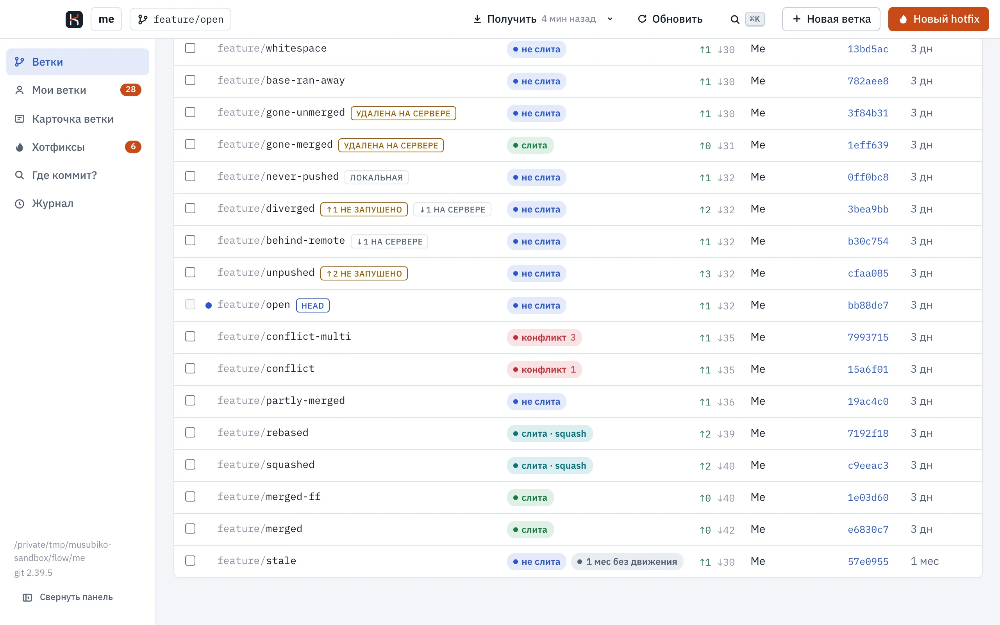
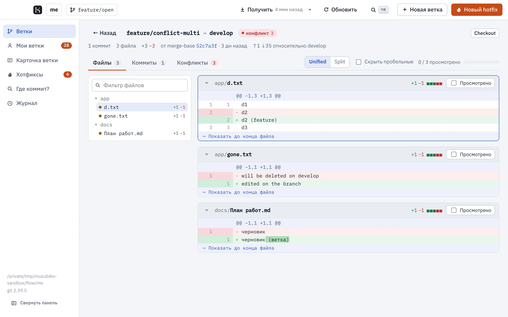
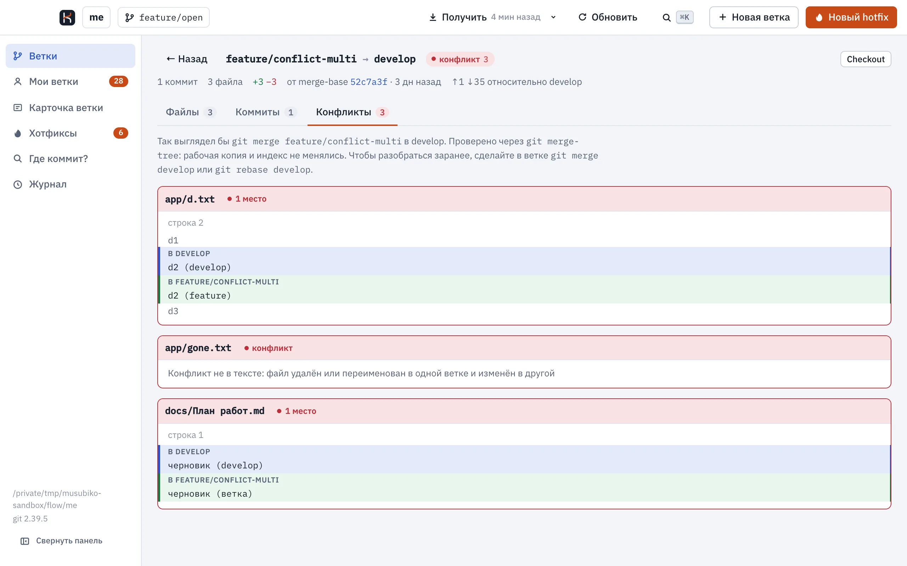
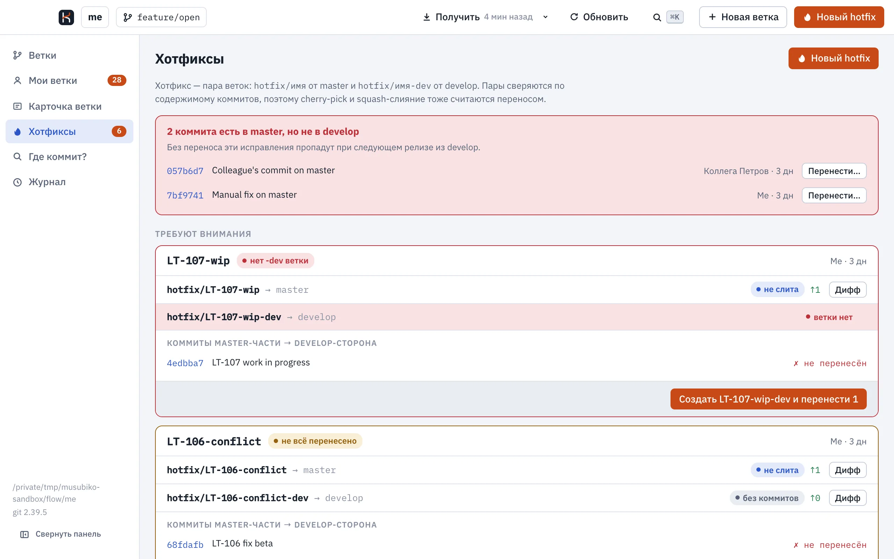
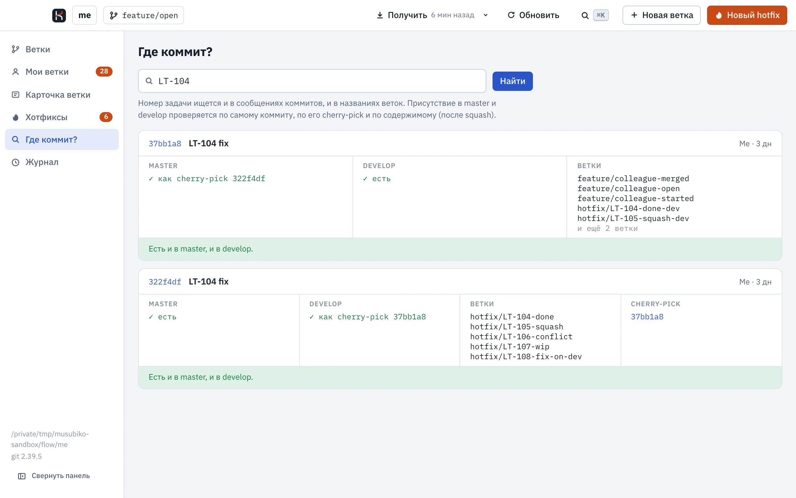

Git-клиент, который показывает, какие ветки уже слиты, даже если их вливали через squash, и где при слиянии будет конфликт. Подойдёт любой репозиторий, хоть с одной веткой main. А если у вас master и develop, Musubiko ещё проследит, чтобы хотфикс попал в обе.

Каждую ветку Musubiko сравнивает с базой: с develop, master (или main) или любой другой веткой, которую вы выберете. Master, main и develop берутся с сервера, так что «слита» означает, что изменения уже на сервере, а не только у вас локально.
git branch --merged такие ветки не находитСлияние проверяется через git merge-tree --write-tree,
рабочую копию и индекс оно не трогает. Результат кэшируется, пока не сдвинется ветка или база,
поэтому в репозитории на 840 веток список при повторном открытии строится за 0,1 с.
Дифф считается от места, где ветка отошла от базы, как в pull request на GitHub. Есть дерево файлов, режимы unified и split, подсветка изменённой части строки и отметка «Просмотрено».
Если ветка конфликтует с базой, можно открыть сами места конфликта и сравнить, что в базе и что в ветке.


Вы пишете название задачи, например «Project-4900 ошибка в документах», и Musubiko создаёт две
ветки: hotfix/PROJECT-4900-oshibka-v-dokumentah от свежего master и
…-dev от свежего develop. Перед этим он проверяет, что такие имена не заняты на
сервере, а потом пушит обе. Команды можно посмотреть до запуска. Если develop в репозитории
нет, хотфикс будет одной веткой от master.
В разделе «Хотфиксы» видно, какие исправления из master уже попали в develop. Коммит засчитывается, даже если его перенесли через cherry-pick или squash. Если чего-то не хватает, это можно перенести прямо оттуда.

Искать можно по хэшу, номеру задачи или тексту сообщения. Для каждого найденного коммита видно, есть ли он в master и develop, с какого тега он в master, в каких ветках лежит и куда его переносили.

Musubiko записывает каждое своё действие в журнал вместе с тем, как его отменить. Перед
отменой он проверяет, что с тех пор ничего не изменилось. Например, ветку, в которую успели
закоммитить, отмена не удалит, а ветку на сервере удаляет только через
push --force-with-lease.
Если удалить неслитую ветку, её коммиты не пропадут: на них остаётся ссылка
refs/musubiko/deleted/…, пока удаление можно отменить.
Установщики — на странице релизов.
Везде нужен git 2.38 или новее. Если хотите использовать конкретный git, укажите путь к нему
в MUSUBIKO_GIT.
| macOS | Musubiko_<версия>_universal.dmgПриложение подписано ad-hoc, без Apple Developer ID. В macOS 15 откройте его, закройте предупреждение и нажмите «Всё равно открыть» в «Системные настройки → Конфиденциальность и безопасность». В macOS 12–14 достаточно правого клика и «Открыть». |
|---|---|
| Windows | Musubiko_<версия>_x64-setup.exeSmartScreen предупредит о неизвестном издателе: нажмите «Подробнее», затем «Выполнить в любом случае». Права администратора не нужны. |
| Linux | .AppImage или .debНужен WebKitGTK 4.1 (Ubuntu 22.04+, Debian 12+). |
Понадобятся Rust 1.88+, Node.js 20+, а на macOS ещё Xcode Command Line Tools.
git clone https://github.com/asqd/musubiko cd musubiko make run # собрать Musubiko.app и запустить make test # тесты ядра на временных репозиториях
То же самое можно посмотреть в терминале через утилиту musubiko:
cargo run -p musubiko-cli -- branches ~/work/project cargo run -p musubiko-cli -- where PROJECT-4888 ~/work/project